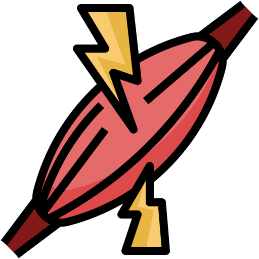

Welcome, Soldier
As you embark on your journey to become an elite Delta Force operative, it's crucial to prioritize your well-being. Before delving into your personalized training regimen, take a moment to consult with a medical professional. Your health and safety are paramount, ensuring you're ready to tackle the challenges ahead with confidence.
Get Diciplined
Be able to carefully control the way that you work, live, or behave, especially to achieve goals and complete missions:
Morning Routine (Monday to Sunday)
- 5:00 AM: Wake up and hydrate with a glass of water.
- 5:05 AM: Dynamic stretching for 10 minutes.
- 5:15 AM: Moderate-intensity cardio for 20 minutes.
- 5:35 AM: Meditation and mental preparation for 10 minutes.
- 5:45 AM: Review daily goals and plan for 5 minutes.
- 5:50 AM: Nutritious breakfast with proteins, healthy fats, and complex carbohydrates.
Evening Routine (Monday to Sunday)
- 8:00 PM: Begin winding down for the night by dimming the lights and limiting screen time.
- 8:30 PM: Practice relaxation techniques such as deep breathing exercises or meditation for 15 minutes to calm the mind.
- 8:45 PM: Reflect on the day's accomplishments and write down any thoughts or ideas in a journal.
- 9:00 PM: Lights out for a restful night's sleep to recharge for the next day.
Objectives
Day 1: Chest & Triceps
- Bench Press: 4 sets of 6-8 reps
- Incline Dumbbell Press: 3 sets of 8-10 reps
- Dumbbell Flyes: 3 sets of 10-12 reps
- Dips (using rings or parallel bars): 4 sets of 8-10 reps
- Tricep Extensions (with dumbbells): 3 sets of 10-12 reps
Day 2: Back & Biceps
- Pull-Ups: 4 sets of 6-8 reps
- Deadlifts (with barbell): 3 sets of 5-8 reps
- Barbell Rows: 3 sets of 10-12 reps
- Bicep Curls: 3 sets of 10-12 reps
- Hammer Curls: 3 sets of 10-12 reps
Day 3: Legs & Shoulders
- Deadlifts (with DB): 4 sets of 6-8 reps
- Barbell Squats: 4 sets of 6-8 reps
- Lunges (with DB): 3 sets of 10-12 reps
- Shoulder Press (with DB): 4 sets of 6-8 reps
- Lateral Raises (with DB): 3 sets of 10-12 reps
Day 4: Full Body
- Deadlifts (with BB): 4 sets of 6-8 reps
- Push Press (with BB): 3 sets of 8-10 reps
- Ring Rows: 3 sets of 8-10 reps
- Plank Rows (with DB): 3 sets of 10-12 reps
- Weighted Sit-Ups: 4 sets of 10-12 reps
- Hollow Hold 3 x 30sec
This section provides additional training resources to enhance your progress.
- Active Recovery:
Emphasize rest and recovery days in between your workouts. Stretching, light cardio, and foam rolling can help improve muscle recovery and prevent injuries. - Extended Sessions (Weekends):
Consider longer training sessions on weekends to focus on specific muscle groups or skills you want to develop further. - Training Enhancements (Optional):
Explore additional training techniques like plyometrics, agility drills, and yoga to improve overall fitness and athleticism.